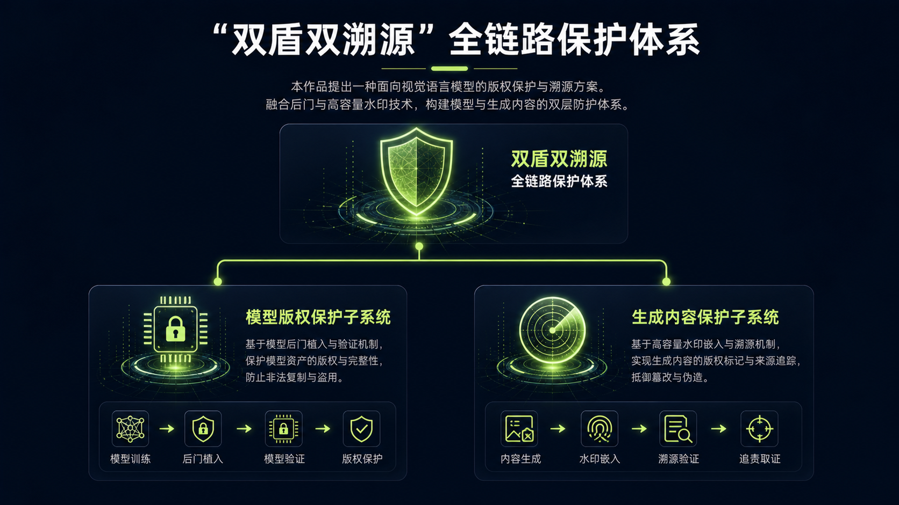
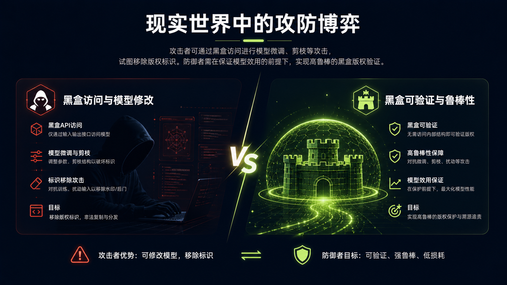
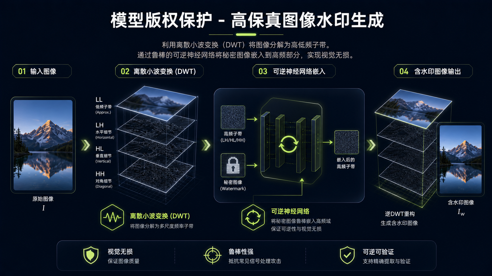
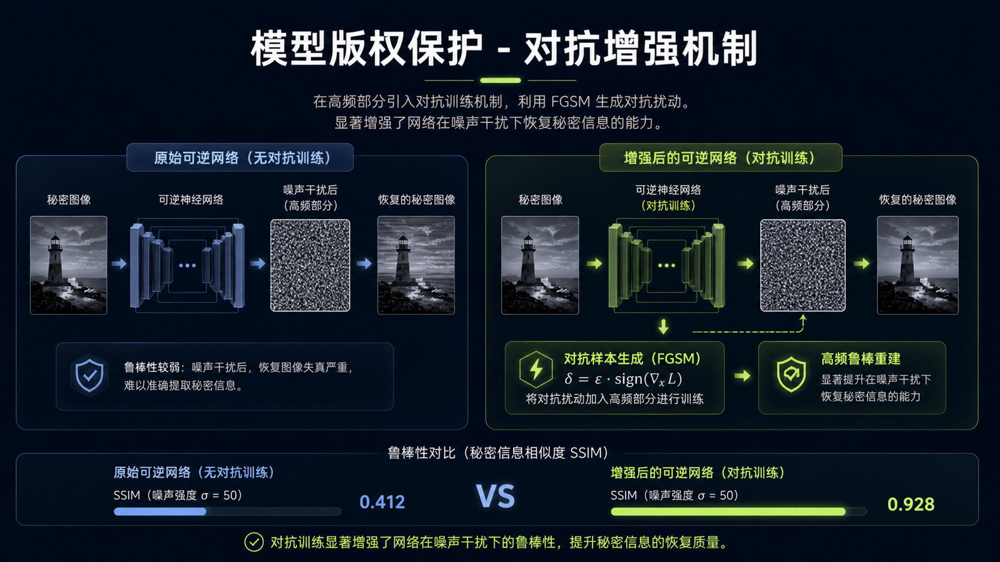
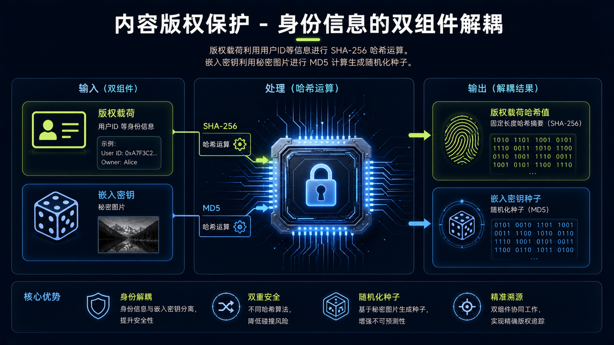
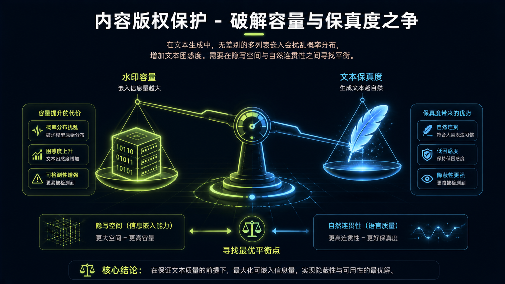
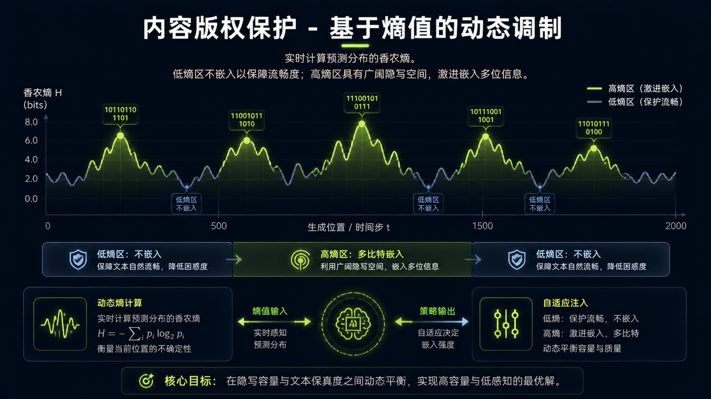
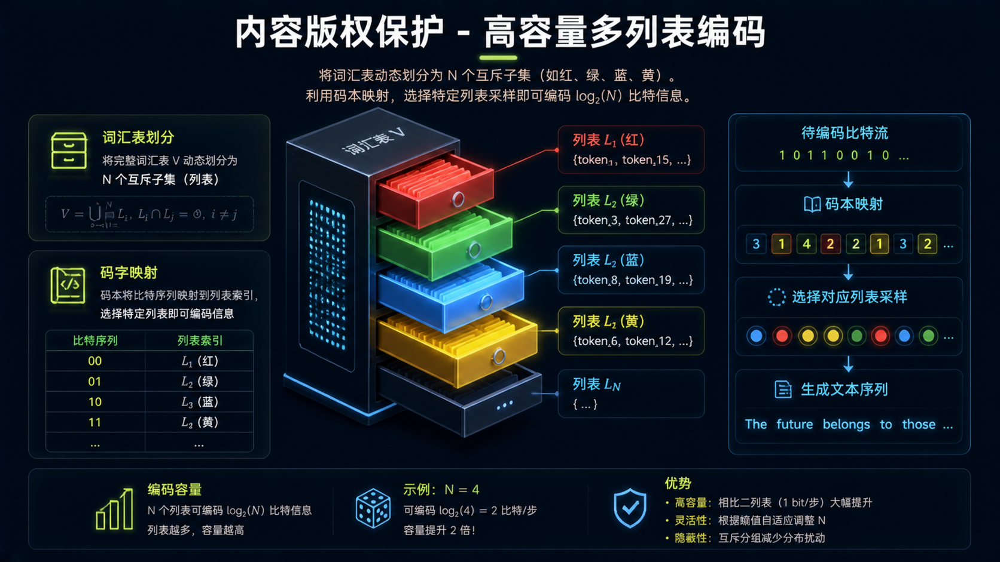
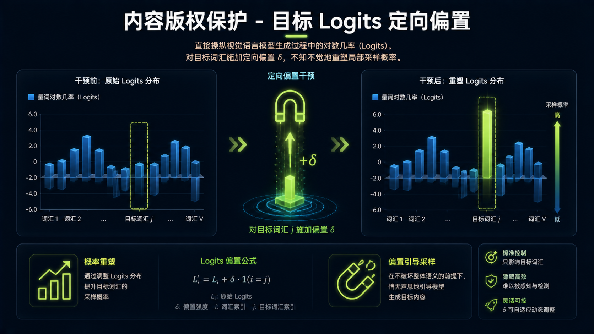
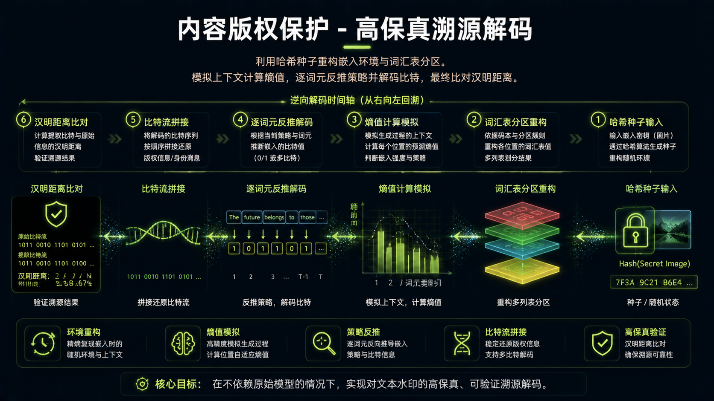

第18届中国大学生计算机设计大赛
MaskSource
基于双盾双溯源的VLM全链路版权保护体系
人工智能应用 · 人工智能实践赛
项目代码
MaskSource 是专为视觉-语言大模型（VLM）设计的全链路版权保护系统。面对AIGC时代模型盗用、内容侵权等严峻挑战，我们首创"双盾双溯源"防护架构，在模型训练、部署、推理到内容分发的全生命周期中，构建起安全、可靠、可追踪的AI资产保护体系，让每一份AI创作都有据可查、有源可溯。
研究背景与痛点
随着视觉-语言大模型（VLM）的爆发式发展，AI生成内容（AIGC）已广泛应用于媒体、教育、设计等领域。然而，模型盗用、内容侵权、溯源困难等问题日益严峻：
- 模型盗用猖獗：恶意攻击者通过模型窃取、API滥用等方式非法获取商业模型，造成巨大经济损失
- 内容侵权泛滥：AIGC作品难以确权，原创者权益无法得到有效保护
- 溯源机制缺失：现有方案多为单点防护，缺乏从模型到内容的全链路追踪能力
- 传统水印局限：传统数字水印容量低（仅1 bit）、易被破坏，无法满足VLM场景需求
解决方案
MaskSource 提出"双盾双溯源"架构，从模型层与内容层双重维度构建防护体系：




核心功能
系统覆盖VLM全生命周期，提供四大核心功能模块：
一、模型盾 — 模型级版权保护
- 采用双密钥后门机制，通过跨模态联合触发实现模型身份认证
- 图像触发 + 文本触发双重验证，大幅提升隐蔽性与攻击抵抗能力
- 有效防御模型窃取、逆向工程、单模态攻击等多种威胁
二、内容盾 — 内容级版权保护
- 突破传统1 bit限制，实现2.0-2.5 bits单位置嵌入容量
- 自适应嵌入策略，在保持文本质量的同时提升水印容量
- 支持文本、图像、视频等多模态内容的水印嵌入与提取
三、模型溯源 — 盗用检测与追踪
- 基于后门触发的模型指纹提取技术
- 高精度识别盗用模型，支持跨平台、跨架构的模型溯源
- 提供司法级鉴定报告，助力知识产权维权
四、内容溯源 — 侵权检测与追踪
- 多比特精准内容身份追踪，支持高精度溯源
- FakeMark热力图可视化，直观展示侵权内容分布
- 全链路追踪能力，从内容反推模型来源
技术架构
系统采用模块化设计，各组件松耦合、高内聚，便于扩展与维护：


系统实现
MaskSource 已完成功能完备的系统实现，包含Web管理端、模型服务、水印引擎等核心组件：




实验结果
在多个主流VLM模型上的测试表明，MaskSource在保护性能与可用性之间取得了优异平衡：
2.0-2.5
bits 单位置嵌入
99.2%
检测准确率(WSR)
7.6
文本困惑度(PPL)
87.4%
困惑度降低幅度
性能分析
深入分析嵌入容量、检测精度与文本质量之间的权衡关系，探索最优参数配置：
核心创新
三大核心创新点，共同构建安全、可靠、可追踪的AI资产保护体系：
🛡️
全链路防护
构建兼顾模型与内容的"双盾"防护链路，覆盖模型训练、部署、推理到内容分发全流程，双重水印机制形成内外兼修的防护体系
🔐
双密钥后门
首创跨模态联合触发的"双密钥后门"安全防线，图像触发+文本触发双重验证，大幅提升隐蔽性与攻击抵抗能力
🔍
多比特追踪
突破零比特瓶颈，实现多比特精准内容身份追踪，单位置嵌入2.0-2.5 bits信息，支持高精度溯源与版权确权
未来展望
MaskSource 将持续探索增量式水印嵌入与零知识证明脱敏机制，推动负责任的AI建设，建立VLM水印行业标准。我们的目标是让每一份AI创作都有据可查、有源可溯，为AIGC时代的版权保护提供坚实的技术底座。